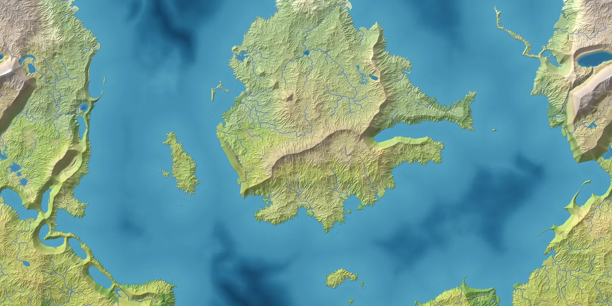

Free to use
Give it a seed and it builds a world — plates and mountains, rivers and lakes, climate and biomes, realms and peoples — then draws a map you can pan, restyle, save and export.

Runs in your browser. Nothing is uploaded.
The first visit downloads about 4.5 MB; it is cached after that.
Drifting plates collide, and what they build depends on what meets: coastal ranges with volcanoes behind them, broad plateaus, island arcs, rift valleys that flood into chains of gulfs.
Slopes collapse, rivers cut valleys and carry the debris down to floodplains, fans and deltas. Basins drain through the notches their overflow cuts.
Continental shelves along the coasts; glaciers in cold mountains and scoured lake country under old ice sheets.
A warm season and a cold one, ocean currents, continental interiors, monsoons and rain shadows. Biomes follow the Köppen rules, so deserts sit where deserts sit.
Water runs downhill to the sea or into lakes. Dry basins hold only the water their catchment can keep against evaporation, so an inland sea shrinks to a salt lake.
Borders follow watersheds, rivers and coasts. Peoples spread through country that resembles their homeland, so cultures cross borders the way real ones do.